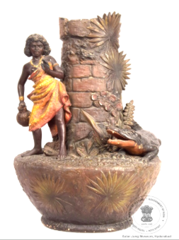

🔇 Is bhasha me is vastu ka audio abhi uplabdh nahi hai.
5. एमएस - 4556: फूलदान

5. एमएस - 4556
हरे-काले रंग का गोल मिट्टी का फूलदान, जिसकी गर्दन के चारों ओर ताड़ के पत्ते और पत्तेदार डिज़ाइन उभरे हुए हैं। इसमें एक मगरमच्छ को दर्शाया गया है, जो एक अफ्रीकी लड़की की ओर बढ़ रहा है। वह अफ्रीकी लड़की अपने दाहिने हाथ में एक छोटा घड़ा पकड़े हुए है। लड़की ने पीले और नारंगी रंग का परिधान पहन रखा है, गले में सुनहरे रंग का हार और दाहिने हाथ में सुनहरे रंग की चूड़ियाँ धारण की हुई हैं। मगरमच्छ के सिर के पास आठ फल बने हुए हैं। मगरमच्छ की पूंछ फूलदान की गर्दन को छू रही है। मगरमच्छ की थूथन का निचला भाग नारंगी रंग का है। यह फूलदान फ्रांस का है और मिट्टी से बना है। यह फूलदान 20वीं शताब्दी का है।
5. एमएस - 4556: फूलदान
5. एमएस - 4556
हरे-काले रंग का गोल मिट्टी का फूलदान, जिसकी गर्दन के चारों ओर ताड़ के पत्ते और पत्तेदार डिज़ाइन उभरे हुए हैं। इसमें एक मगरमच्छ को दर्शाया गया है, जो एक अफ्रीकी लड़की की ओर बढ़ रहा है। वह अफ्रीकी लड़की अपने दाहिने हाथ में एक छोटा घड़ा पकड़े हुए है। लड़की ने पीले और नारंगी रंग का परिधान पहन रखा है, गले में सुनहरे रंग का हार और दाहिने हाथ में सुनहरे रंग की चूड़ियाँ धारण की हुई हैं। मगरमच्छ के सिर के पास आठ फल बने हुए हैं। मगरमच्छ की पूंछ फूलदान की गर्दन को छू रही है। मगरमच्छ की थूथन का निचला भाग नारंगी रंग का है। यह फूलदान फ्रांस का है और मिट्टी से बना है। यह फूलदान 20वीं शताब्दी का है।
5. MS - 4556: పూలకుండీ
5. MS - 4556
ఈ పూలకుండీ 20వ శతాబ్దానికి చెందిన ఫ్రెంచ్ కళాఖండం. ఇది బంకమట్టితో తయారు చేయబడిన, ఆకుపచ్చ-నలుపు రంగులో ఉన్న గుండ్రటి పాత్ర. ఈ కుండీ మెడ చుట్టూ పత్రాలు మరియు ఆకులు ఉబ్బెత్తుగా అలంకరించబడి ఉన్నాయి. ఈ అలంకరణలో ఒక ఆఫ్రికన్ అమ్మాయిని ఒక మొసలి సమీపిస్తున్నట్లు చిత్రీకరించబడింది. ఆ అమ్మాయి తన కుడి చేతిలో ఒక చిన్న కుండను పట్టుకొని ఉంది. ఆమె పసుపు మరియు నారింజ రంగు దుస్తులు, మెడలో బంగారు రంగు నెక్లెస్ మరియు కుడి చేతికి బంగారు రంగు గాజులు ధరించి ఉంది. మొసలి తల దగ్గర ఎనిమిది పండ్లు ఉన్నాయి. మొసలి తోక కుండీ మెడను తాకుతుండగా, దాని మూతి కింది భాగం నారింజ రంగులో ఉంది.
5. ایم ایس -4556: وی اے ایس ای
5. ایم ایس -4556
1.ایکسایل- 8:نندی کا مجسمہ
2. ایکس ایکسII - 534:سجاوٹی سامان
3. 13-59: مہاتماگاندھی
4. ایکس ایلII-40: گائے،بچھڑےاورلڑکےکرشن
5. ایم ایس -4556: وی اے ایس ای
6. ایل ایکس ایکسVII-349: پیپراسٹینڈ
7۔اے سی کیو-62-211-3: دسچھوٹےپرندے
8. VII-27: برڈکیاقسام
9۔ایل ایکس ایکسVII-99: شنکھ
ایکسایل 8: نندیکا مجسمہ
پتھر سے تراشا گیا نندی کا ایک مجسمہ، جس کے سامنے اسی چوکھٹ پر ایک چھوٹا شیولنگ رکھا ہوا ہے۔ نندی کے گردن میں ایک چھوٹی سی گھنٹی لٹک رہی ہے، جو فنکارانہ نزاکت اور خوبصورت کاریگری کی عمدہ مثال پیش کرتی ہے۔نندی کو نندیشور یا نندیدیو کے نام سے بھی جانا جاتا ہے۔ نندی ہندو دیوتا شیو کی سواریہے۔ تقریباً تمام شیو مندروں میں نندی کا پتھریلا مجسمہ موجود ہوتا ہے، جو عموماً مرکزی مندر کی طرف رخ کیے بیٹھا ہوتا ہے۔شاشتروں میں نندی کو زو انسانی شکل میں بیان کیا گیا ہے ، جس میں بیل کا سر اور چار بازو ہوتے ہیں۔اور ان ہاتھوں میں ہرن، کلہاڑی، گرز اور ابھے مودرا یعنی بے باکیکی علامت والا ہاتھدکھایا گیا ہے۔ بطور سواری، نندی کو دنیا بھر کے تمام شِو مندروں میں ایک بیٹھے ہوئے بیل کی صورت میں پیش کیا جاتا ہے۔ اس تصور کی ابتدا بھارت سے ہوئی اور اس کا تعلق سولہویں صدی سے جوڑا جاتا ہے۔
2. XXII-534: سجاوٹی سامان
املی کے بیجوں پر تراشے گئے جانوروں کا ایک خوبصورت فن پارہ۔ سات املی کے بیجوں کے آدھے حصوں پر نہایت نفاست سے دو ہاتھی ایک گھوڑا ایک شیر ایک ببر شیر ایک اونٹ اور ایک کتا کو دکھایا گیا ہے ۔یہ ایک آرائشی نمونہ ہے جس میں ہاتھی دانت سے تراشا گیا درخت ایک بیضوی لکڑی کے تختے پر نصب ہے۔ اس بیضوی لکڑی کے تختے کے گرد بیلدار نقش و نگار بنے ہوئے ہیں۔ لکڑی کے اس تختے کے دونوں کناروں پر دو سیاہ رنگ کے شیر نصب ہیں، جن کی دمیں پشت پر اٹھی ہوئی ہیں۔یہ فن پارہ ہاتھی دانت اور لکڑی سے تیار کیا گیا ہے اور فنکار کی اعلیٰ مہارت اور نفیس دستکاری کو نمایاں کرتا ہے۔ یہ سجاوٹی شاہکار ہندوستان سے تعلق رکھتا ہے اور بیسویں صدی کا ہے۔
3. 13-59: مہاتما گاندھی
مہاتما گاندھی کا یہ چلتا ہوا مجسمہ سیاہ رنگ کے ایک چبوترے پر کھڑا ہے اور پلاسٹر آف پیرس سے تیار کیا گیا ہے۔ دائیں ہاتھ میں ایک لاٹھی ہے جو سیاہ رنگ کی ہے، جبکہ بائیں ہاتھ سے وہ اپنی شال کے کنارے کو تھامے ہوئے ہیں۔ ان کے کمر بند پر ایک چھوٹی گھڑی لگی ہوئی ہے۔یہ گاندھی جی کا مجسمہ ہندوستان میں تیار کیا گیا ہے اور بیسویں صدیسے تعلق رکھتا ہے۔موہن داس کرم چند گاندھی، جنہیں مہاتما گاندھی کے نام سے جانا جاتا ہے، ہندوستان کی آزادی کی تحریک کے ایک مرکزی رہنما تھے۔ انہوں نے عدم تشدد کے اصول پر مبنی جدوجہد کی اور سماجی انصاف کے لیے دنیا بھر میں تحریکوں کو متاثر کیا۔گاندھی جی کو ہندوستان کا باپو یا بابائے قوم کہا جاتا ہے۔ انہوں نے انگریزوں کے استعماری اقتدار کے خلاف عدم تشدد پر مبنی تحریکوں کی قیادت کی۔مہاتما گاندھی کو آج بھی عدم تشدد، خود انحصاری اور سماجی مساوات کے اصولوں سے غیر متزلزل وابستگی کے لیے یاد کیا جاتا ہے۔
4. XLII-40: گائے، گائے کا بچہاور بالکرشنہ
سنگِ مرمر سے تراشا گیا گائے کا مجسمہ ، جس کے دائیں جانب بال کرشنہ اور بائیں جانب گائے کا بچہ موجود ہے۔ گائے کا بچہ گائے کے ایک تھن سے دودھ پی رہا ہے، جبکہ کرشنہ اپنے دائیں ہاتھ سے گائے کے دودھکے برتن کوپکڑے ہوئے ہیں۔گائے کرشنہ اور گائے کا بچہ کا یہ منظر ہندو مذہب میں ایک نہایت مقدس اور طاقتورعلامتسمجھا جاتا ہے، جو کرشنہ کے الوہی چرواہے کے کردار، ان کی پرورش و محافظت کی صفت اور بھکتوں پر شفقت و رحمت کی یاد دہانی کراتا ہے۔کرشنہ کو اکثر گووندیا گوپالکے نام سے پکارا جاتا ہے، جس کا مطلب ہے گایوں کا محافظ۔ یہ لقب ان کی ان صفات کی عکاسی کرتا ہے جن میں وہ ان جانوروں کے لیے محبت شفقت اور دیکھ بھال کا مظاہرہ کرتے ہیں۔ہندو روایت میں گائے دولتزرخیزی اور زندگی بخش دودھ کی علامت سمجھی جاتی ہے۔ اس طرح کرشنہ کا گایوں سے تعلقخوشحالی فیاضی اور برکت کی ایک ہمہ گیر علامت بن جاتا ہے۔یہ سنگِ مرمر کا مجسمہ ہندوستان سے تعلق رکھتا ہے اور بیسویں صدی سے ہے۔
5. ایم ایس-4556: گلدان
سبز مائل سیاہ رنگ کا گول مٹی کا گلدان، جس کی گردن کے حصے پر کھجور کے پتوں اور پودوں کے نقش ابھار دار انداز میں بنائے گئے ہیں۔ اس منظر میں ایک مگرمچھ کو دکھایا گیا ہے جو ایک افریقی لڑکی کی طرف بڑھ رہا ہے۔وہ افریقی لڑکی اپنے دائیں ہاتھ میں ایک چھوٹا برتن پکڑی ہوئی ہے۔ اس نے زرد اور نارنجی رنگ کا لباس پہن رکھی ہے، گردن میں سنہری ہار اور دائیں ہاتھ میں سنہری چوڑیاں پہنی ہوئی ہیں۔مگرمچھ کے سر کے قریب آٹھ پھل بنے ہوئے ہیں، اور اس کی دم گلدان کی گردن کو چھو رہی ہے۔ مگرمچھ کی تھوتھنی کا نچلا حصہ نارنجی رنگ میں رنگا گیا ہے۔یہ گلدان فرانس سے تعلق رکھتا ہے، مٹی سے تیار کیا گیا ہے، اس گلدان کا تعلق بیسویں صدی سے ہے
2. ایکس ایکسII - 534:سجاوٹی سامان
3. 13-59: مہاتماگاندھی
4. ایکس ایلII-40: گائے،بچھڑےاورلڑکےکرشن
5. ایم ایس -4556: وی اے ایس ای
6. ایل ایکس ایکسVII-349: پیپراسٹینڈ
7۔اے سی کیو-62-211-3: دسچھوٹےپرندے
8. VII-27: برڈکیاقسام
9۔ایل ایکس ایکسVII-99: شنکھ
ایکسایل 8: نندیکا مجسمہ
پتھر سے تراشا گیا نندی کا ایک مجسمہ، جس کے سامنے اسی چوکھٹ پر ایک چھوٹا شیولنگ رکھا ہوا ہے۔ نندی کے گردن میں ایک چھوٹی سی گھنٹی لٹک رہی ہے، جو فنکارانہ نزاکت اور خوبصورت کاریگری کی عمدہ مثال پیش کرتی ہے۔نندی کو نندیشور یا نندیدیو کے نام سے بھی جانا جاتا ہے۔ نندی ہندو دیوتا شیو کی سواریہے۔ تقریباً تمام شیو مندروں میں نندی کا پتھریلا مجسمہ موجود ہوتا ہے، جو عموماً مرکزی مندر کی طرف رخ کیے بیٹھا ہوتا ہے۔شاشتروں میں نندی کو زو انسانی شکل میں بیان کیا گیا ہے ، جس میں بیل کا سر اور چار بازو ہوتے ہیں۔اور ان ہاتھوں میں ہرن، کلہاڑی، گرز اور ابھے مودرا یعنی بے باکیکی علامت والا ہاتھدکھایا گیا ہے۔ بطور سواری، نندی کو دنیا بھر کے تمام شِو مندروں میں ایک بیٹھے ہوئے بیل کی صورت میں پیش کیا جاتا ہے۔ اس تصور کی ابتدا بھارت سے ہوئی اور اس کا تعلق سولہویں صدی سے جوڑا جاتا ہے۔
2. XXII-534: سجاوٹی سامان
املی کے بیجوں پر تراشے گئے جانوروں کا ایک خوبصورت فن پارہ۔ سات املی کے بیجوں کے آدھے حصوں پر نہایت نفاست سے دو ہاتھی ایک گھوڑا ایک شیر ایک ببر شیر ایک اونٹ اور ایک کتا کو دکھایا گیا ہے ۔یہ ایک آرائشی نمونہ ہے جس میں ہاتھی دانت سے تراشا گیا درخت ایک بیضوی لکڑی کے تختے پر نصب ہے۔ اس بیضوی لکڑی کے تختے کے گرد بیلدار نقش و نگار بنے ہوئے ہیں۔ لکڑی کے اس تختے کے دونوں کناروں پر دو سیاہ رنگ کے شیر نصب ہیں، جن کی دمیں پشت پر اٹھی ہوئی ہیں۔یہ فن پارہ ہاتھی دانت اور لکڑی سے تیار کیا گیا ہے اور فنکار کی اعلیٰ مہارت اور نفیس دستکاری کو نمایاں کرتا ہے۔ یہ سجاوٹی شاہکار ہندوستان سے تعلق رکھتا ہے اور بیسویں صدی کا ہے۔
3. 13-59: مہاتما گاندھی
مہاتما گاندھی کا یہ چلتا ہوا مجسمہ سیاہ رنگ کے ایک چبوترے پر کھڑا ہے اور پلاسٹر آف پیرس سے تیار کیا گیا ہے۔ دائیں ہاتھ میں ایک لاٹھی ہے جو سیاہ رنگ کی ہے، جبکہ بائیں ہاتھ سے وہ اپنی شال کے کنارے کو تھامے ہوئے ہیں۔ ان کے کمر بند پر ایک چھوٹی گھڑی لگی ہوئی ہے۔یہ گاندھی جی کا مجسمہ ہندوستان میں تیار کیا گیا ہے اور بیسویں صدیسے تعلق رکھتا ہے۔موہن داس کرم چند گاندھی، جنہیں مہاتما گاندھی کے نام سے جانا جاتا ہے، ہندوستان کی آزادی کی تحریک کے ایک مرکزی رہنما تھے۔ انہوں نے عدم تشدد کے اصول پر مبنی جدوجہد کی اور سماجی انصاف کے لیے دنیا بھر میں تحریکوں کو متاثر کیا۔گاندھی جی کو ہندوستان کا باپو یا بابائے قوم کہا جاتا ہے۔ انہوں نے انگریزوں کے استعماری اقتدار کے خلاف عدم تشدد پر مبنی تحریکوں کی قیادت کی۔مہاتما گاندھی کو آج بھی عدم تشدد، خود انحصاری اور سماجی مساوات کے اصولوں سے غیر متزلزل وابستگی کے لیے یاد کیا جاتا ہے۔
4. XLII-40: گائے، گائے کا بچہاور بالکرشنہ
سنگِ مرمر سے تراشا گیا گائے کا مجسمہ ، جس کے دائیں جانب بال کرشنہ اور بائیں جانب گائے کا بچہ موجود ہے۔ گائے کا بچہ گائے کے ایک تھن سے دودھ پی رہا ہے، جبکہ کرشنہ اپنے دائیں ہاتھ سے گائے کے دودھکے برتن کوپکڑے ہوئے ہیں۔گائے کرشنہ اور گائے کا بچہ کا یہ منظر ہندو مذہب میں ایک نہایت مقدس اور طاقتورعلامتسمجھا جاتا ہے، جو کرشنہ کے الوہی چرواہے کے کردار، ان کی پرورش و محافظت کی صفت اور بھکتوں پر شفقت و رحمت کی یاد دہانی کراتا ہے۔کرشنہ کو اکثر گووندیا گوپالکے نام سے پکارا جاتا ہے، جس کا مطلب ہے گایوں کا محافظ۔ یہ لقب ان کی ان صفات کی عکاسی کرتا ہے جن میں وہ ان جانوروں کے لیے محبت شفقت اور دیکھ بھال کا مظاہرہ کرتے ہیں۔ہندو روایت میں گائے دولتزرخیزی اور زندگی بخش دودھ کی علامت سمجھی جاتی ہے۔ اس طرح کرشنہ کا گایوں سے تعلقخوشحالی فیاضی اور برکت کی ایک ہمہ گیر علامت بن جاتا ہے۔یہ سنگِ مرمر کا مجسمہ ہندوستان سے تعلق رکھتا ہے اور بیسویں صدی سے ہے۔
5. ایم ایس-4556: گلدان
سبز مائل سیاہ رنگ کا گول مٹی کا گلدان، جس کی گردن کے حصے پر کھجور کے پتوں اور پودوں کے نقش ابھار دار انداز میں بنائے گئے ہیں۔ اس منظر میں ایک مگرمچھ کو دکھایا گیا ہے جو ایک افریقی لڑکی کی طرف بڑھ رہا ہے۔وہ افریقی لڑکی اپنے دائیں ہاتھ میں ایک چھوٹا برتن پکڑی ہوئی ہے۔ اس نے زرد اور نارنجی رنگ کا لباس پہن رکھی ہے، گردن میں سنہری ہار اور دائیں ہاتھ میں سنہری چوڑیاں پہنی ہوئی ہیں۔مگرمچھ کے سر کے قریب آٹھ پھل بنے ہوئے ہیں، اور اس کی دم گلدان کی گردن کو چھو رہی ہے۔ مگرمچھ کی تھوتھنی کا نچلا حصہ نارنجی رنگ میں رنگا گیا ہے۔یہ گلدان فرانس سے تعلق رکھتا ہے، مٹی سے تیار کیا گیا ہے، اس گلدان کا تعلق بیسویں صدی سے ہے
5. MS - 4556: ফুলদানি
5. MS - 4556
সবুজ-কালো রঙের গোল মাটির ফুলদানি, যার গলার চারপাশে তালপাতা ও পাতাযুক্ত নকশা উঁচু হয়ে রয়েছে। এতে একটি কুমির দেখানো হয়েছে, যা একটি আফ্রিকান মেয়ের দিকে এগিয়ে আসছে। সেই আফ্রিকান মেয়েটি নিজের ডান হাতে একটি ছোট কলসি ধরে আছে। মেয়েটি হলুদ ও কমলা রঙের পোশাক পরেছে, গলায় সোনালি রঙের হার এবং ডান হাতে সোনালি রঙের চুড়ি পরেছে। কুমিরের মাথার কাছে আটটি ফল তৈরি করা হয়েছে। কুমিরের লেজ ফুলদানির গলা স্পর্শ করছে। কুমিরের চোয়ালের নিচের অংশ কমলা রঙের। এই ফুলদানিটি ফ্রান্সের এবং মাটি দিয়ে তৈরি। এই ফুলদানিটি ২০শ শতাব্দীর।
5. MS-4556: ફૂલદાની
5. MS-4556
ગળામાં તાળપત્ર અને પર્ણસમૂહ સાથે એક ગોળ લીલી-કાળી માટીની ફૂલદાની, જે એક મગરને આફ્રિકન છોકરી પાસે આવતો દર્શાવે છે. છોકરીએ જમણા હાથમાં એક નાનું વાસણ પકડેલું છે. આફ્રિકન છોકરીએ પીળો અને નારંગી રંગનો ડ્રેસ, ગળામાં સોનેરી રંગનો હાર અને જમણા હાથમાં સોનેરી રંગની બંગડીઓ પહેરેલી છે. મગરના માથા પાસે આઠ ફળો મૂકવામાં આવ્યા છે. મગરની પૂંછડી ફૂલદાની ગળાને સ્પર્શે છે. મગરના નાકનો નીચેનો ભાગ નારંગી રંગનો છે. આ ફૂલદાની ફ્રાન્સની છે. તે માટીની બનેલી છે. આ ફૂલદાની 20મી સદીની છે.
5. MS-4556: ವೆಸ್
5. MS-4556
ಹಸಿರು ಮಿಶ್ರಿತ ಕಪ್ಪು ಬಣ್ಣದ, ದುಂಡಾಕಾರದ ಮಣ್ಣಿನ ಹೂದಾನಿಯ ಅದ್ಭುತ ಕಲಾಕೃತಿ ಇದಾಗಿದೆ. ಇದರ ಕುತ್ತಿಗೆಯ ಭಾಗದಲ್ಲಿ ತಾಳೆಗರಿಗಳು ಮತ್ತು ಎಲೆಗಳ ಉಬ್ಬು ವಿನ್ಯಾಸವಿದ್ದು, ತನ್ನ ಬಲಗೈಯಲ್ಲಿ ಸಣ್ಣ ಮಡಕೆಯನ್ನು ಹಿಡಿದುಕೊಂಡಿರುವ ಆಫ್ರಿಕನ್ ಹುಡುಗಿಯೊಬ್ಬಳ ಬಳಿಗೆ ಮೊಸಳೆಯೊಂದು ಧಾವಿಸುತ್ತಿರುವ ರೋಚಕ ದೃಶ್ಯವನ್ನು ಇದು ಬಿಂಬಿಸುತ್ತಿದೆ.ಆ ಆಫ್ರಿಕನ್ ಹುಡುಗಿಯು ಹಳದಿ ಮತ್ತು ಕಿತ್ತಳೆ ಬಣ್ಣದ ಉಡುಪನ್ನು ಧರಿಸಿದ್ದಾಳೆ. ಅಲ್ಲದೆ, ಅವಳು ತನ್ನ ಕುತ್ತಿಗೆಗೆ ಚಿನ್ನದ ಬಣ್ಣದ ಸರವನ್ನು ಹಾಗೂ ಬಲಗೈಗೆ ಚಿನ್ನದ ಬಣ್ಣದ ಬಳೆಗಳನ್ನು ತೊಟ್ಟಿದ್ದಾಳೆ.ಆ ಮೊಸಳೆಯ ತಲೆಯ ಬಳಿ ಎಂಟು ಹಣ್ಣುಗಳನ್ನು ವಿನ್ಯಾಸಗೊಳಿಸಲಾಗಿದೆ. ಮೊಸಳೆಯ ಬಾಲವು ಹೂದಾನಿಯ ಕುತ್ತಿಗೆಯ ಭಾಗವನ್ನು ಸ್ಪರ್ಶಿಸುತ್ತಿದೆ ಮತ್ತು ಅದರ ಮುಖದಕೆಳಭಾಗವು ಕಿತ್ತಳೆ ಬಣ್ಣದಲ್ಲಿದೆ.ಜೇಡಿಮಣ್ಣಿನಿಂದ ಮಾಡಲಾದ ಈ ಸುಂದರವಾದ ಹೂದಾನಿಯು ಫ್ರಾನ್ಸ್ ದೇಶಕ್ಕೆ ಸೇರಿದ್ದು, 20ನೇ ಶತಮಾನದಷ್ಟು ಹಳೆಯದಾಗಿದೆ.
5. MS - 4556: ଫୁଲଦାନୀ
5. MS - 4556
ତାଳପତ୍ର ଏବଂ ପତ୍ରରେ ସଜ୍ଜିତ ଏହା ଗୋଟିଏ ଗୋଲ୍, ସବୁଜ-କଳାରଙ୍ଗର ମାଟିରେ ନିର୍ମିତ ଫୁଲଦାନୀ, ଯାହାର ତଳ ଅଂଶରେଗୋଟିଏ କୁମ୍ଭୀର ଜଣେ ଆଫ୍ରିକୀୟ ଝିଅ ପାଖକୁ ଆସୁଥିବାର ଚିତ୍ରିତ ହୋଇଛି। ତା'ର ଡାହାଣ ହାତରେ ଛୋଟ ପାତ୍ରଟିଏ ଧରିଛି।ଝିଅଟି ହଳଦିଆ ଏବଂ ନାରଙ୍ଗିରଙ୍ଗର ପୋଷାକପିନ୍ଧିଛି,ଏହା ସହବେକରେ ସୁନାରଙ୍ଗର ହାର ଏବଂ ଡାହାଣ ହାତରେ ସୁନାରଙ୍ଗର ଚୁଡ଼ି ପରିହିତଦେଖିବାକୁ ମିଳେ। କୁମ୍ଭୀରର ମୁଣ୍ଡ ପାଖରେ ଆଠୋଟି ଫଳ ରଖାଯାଇଛିଏବଂ ଲାଞ୍ଜଟି ଫୁଲଦାନୀର ତଳ ଭାଗକୁ ସ୍ପର୍ଶ କରୁଛି। ଏହାରମୁଖର ତଳ ଅଂଶଟିକୁ କମଳା ରଙ୍ଗରେ ରଙ୍ଗିତ କରାଯାଇଛି। ଏହି ଫୁଲଦାନୀଟି ଫ୍ରାନ୍ସରେ ନିର୍ମିତ ହୋଇଥିଲା ଏବଂବିଂଶ ଶତାବ୍ଦୀରଅଟେ।
Item 5
5. MS - 4556: പൂപ്പാത്രം
5. MS - 4556
പച്ചകലർന്നകറുപ്പ്നിറത്തിലുള്ളമണ്ണുകൊണ്ട്നിർമ്മിച്ചവൃത്താകൃതിയിലുള്ളഒരുപൂപ്പാത്രം .ഇതിന്റെകഴുത്തുഭാഗത്ത്ഈന്തപ്പനയുടെഇലകളുംസസ്യജാലങ്ങളുംകൊത്തിവെച്ചിരിക്കുന്നു. വലതുകൈയിൽ ഒരുചെറിയപാത്രംപിടിച്ചിരിക്കുന്നഒരുആഫ്രിക്കൻ പെൺകുട്ടിയുടെഅടുത്തേക്ക്ഒരുമുതലഅടുത്തുവരുന്നദൃശ്യമാണ്ഇതിൽ ആവിഷ്കരിച്ചിരിക്കുന്നത്.
മഞ്ഞയുംഓറഞ്ചുംകലർന്നവസ്ത്രമാണ് ആ പെൺകുട്ടിധരിച്ചിരിക്കുന്നത്. കഴുത്തിൽ സ്വർണ്ണനിറത്തിലുള്ളമാലയുംവലതുകൈയിൽ സ്വർണ്ണനിറത്തിലുള്ളവളകളുംഅവൾ അണിഞ്ഞിട്ടുണ്ട്. മുതലയുടെതലയ്ക്ക്സമീപംഎട്ട്പഴങ്ങൾ കാണാം. മുതലയുടെവാല്പാത്രത്തിന്റെകഴുത്തുഭാഗത്ത്മുട്ടിനിൽക്കുന്നു. മുതലയുടെവായയുടെകീഴ്ഭാഗത്തിന്ഓറഞ്ച്നിറമാണ്നൽകിയിരിക്കുന്നത്. ഇരുപതാംനൂറ്റാണ്ടിൽ ഫ്രാൻസിൽ കളിമണ്ണ്ഉപയോഗിച്ച്നിർമ്മിച്ചതാണ് ഈ പാത്രം.
പഴങ്ങളുണ്ട്. മുതലകളുടെവാൽ പാത്രത്തിന്റെകഴുത്തിൽ സ്പർശിക്കുന്നു. മുതലകളുടെമൂക്കിന്റെതാഴത്തെഭാഗംഓറഞ്ച്നിറത്തിലാണ്. ഈ പാത്രംഫ്രാൻസിൽ നിന്നുള്ളതാണ്. കളിമണ്ണ്ഉപയോഗിച്ചാണ്ഇത്നിർമ്മിച്ചിരിക്കുന്നത്. 20-ാം നൂറ്റാണ്ടിലേതാണ്ഇത്.
മഞ്ഞയുംഓറഞ്ചുംകലർന്നവസ്ത്രമാണ് ആ പെൺകുട്ടിധരിച്ചിരിക്കുന്നത്. കഴുത്തിൽ സ്വർണ്ണനിറത്തിലുള്ളമാലയുംവലതുകൈയിൽ സ്വർണ്ണനിറത്തിലുള്ളവളകളുംഅവൾ അണിഞ്ഞിട്ടുണ്ട്. മുതലയുടെതലയ്ക്ക്സമീപംഎട്ട്പഴങ്ങൾ കാണാം. മുതലയുടെവാല്പാത്രത്തിന്റെകഴുത്തുഭാഗത്ത്മുട്ടിനിൽക്കുന്നു. മുതലയുടെവായയുടെകീഴ്ഭാഗത്തിന്ഓറഞ്ച്നിറമാണ്നൽകിയിരിക്കുന്നത്. ഇരുപതാംനൂറ്റാണ്ടിൽ ഫ്രാൻസിൽ കളിമണ്ണ്ഉപയോഗിച്ച്നിർമ്മിച്ചതാണ് ഈ പാത്രം.
പഴങ്ങളുണ്ട്. മുതലകളുടെവാൽ പാത്രത്തിന്റെകഴുത്തിൽ സ്പർശിക്കുന്നു. മുതലകളുടെമൂക്കിന്റെതാഴത്തെഭാഗംഓറഞ്ച്നിറത്തിലാണ്. ഈ പാത്രംഫ്രാൻസിൽ നിന്നുള്ളതാണ്. കളിമണ്ണ്ഉപയോഗിച്ചാണ്ഇത്നിർമ്മിച്ചിരിക്കുന്നത്. 20-ാം നൂറ്റാണ്ടിലേതാണ്ഇത്.